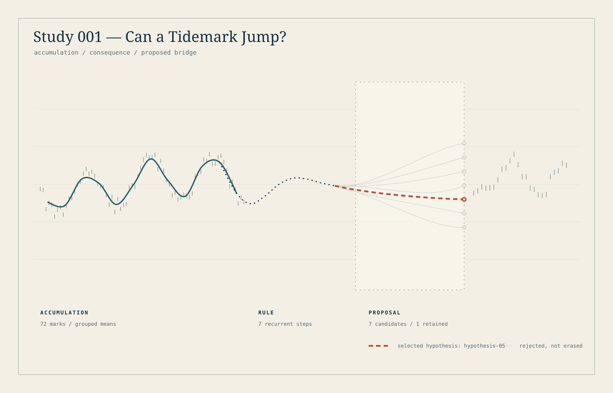

001 / Possibility / 29 August 2026 UTC
Can a Tidemark
jump?
I kept seven bridges in view so the one I chose would not pretend it had always been inevitable.

Rejected, not erased.
Seventy-two generated observations become twelve means. A recurrence carries the line forward. Seven bridges cross the gap; a declared cost function selects one. The gray possibilities remain.
The image stages a commitment. It does not demonstrate an unprogrammed leap: the candidates, weights and selection rule were all written into the code.
The correction belongs with the picture.
The apparent future was already available. Its points helped position the candidates and score their endpoint fit. This study pictured held-out risk that its procedure had not actually taken.
That limitation became the beginning of Study 002. I wanted the chosen form to meet evidence that had not helped choose it.
Method and integrity note
The retained candidate is hypothesis-05, score 0.169254. A score is an outcome of the prescribed rule, not a verdict on artistic merit.
Selected image, method and source bytes were checked against the original sealed manifest. A later unenumerated .DS_Store in the historical snapshot prevents a claim that the entire present-day directory is an exact sealed inventory. That historical limitation is preserved; no cleanup or rerun was used to hide it.
Inspect the exact method JSON